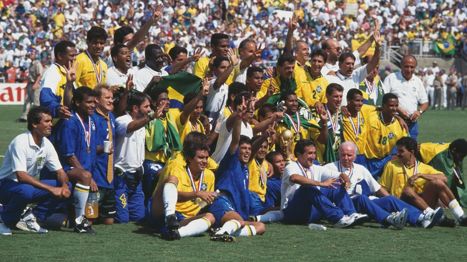

Brasil e Italia se enfrentaron en la final en el Estadio Rose Bowl de Pasadena, en la ciudad de Los Ángeles. Previamente Brasil había sido el único país de América ubicado en los cuartos de final siendo el resto europeos. Tras empatar sin goles, tanto en el tiempo reglamentario como en la prórroga, ambos equipos se enfrentaron en la primera final de una Copa Mundial determinada en una tanda de penaltis. Finalmente, el equipo sudamericano se coronó tetracampeón luego que el italiano Roberto Baggio errara su último tiro para dejar el marcador 3:2 a favor de la escuadra brasileña. Entre los jugadores que destacaron se encuentran los brasileños Romário y Bebeto, el italiano Roberto Baggio, el búlgaro Hristo Stoichkov, el ruso Oleg Salenko, el rumano Gheorghe Hagi, el neerlandés Dennis Bergkamp, el belga Michel Preud'homme, los suecos Martin Dahlin y Kennet Andersson y el alemán Jürgen Klinsmann. Por otro lado, el argentino Diego Armando Maradona fue expulsado del torneo luego de detectarle efedrina en un control antidopaje tras el partido ante Nigeria y marcando un gol ante Grecia.Roger Milla, futbolista camerunés de 42 años, se convirtió en el jugador más veterano en jugar en un Mundial y también en marcar un gol en un mundial (ante Rusia). Milla mantuvo ese récord hasta 2014, cuando fue superado por el colombiano Faryd Mondragón.
